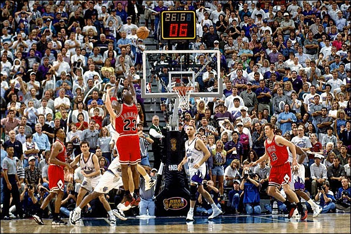

EL tenia una condicion fisica increible. el jugó durante toda su infancia al beisbol, baloncesto y futbol americano.El era Aficionado desde pequeño al baloncesto, empezó a despuntar siendo todavía un adolescente; a los trece años, su padre hizo construir una pista de baloncesto en el patio trasero de su casa, donde empezó a ser la admiración del barrio y de los vecinos que se reunían las tardes del fin de semana para jugar al básquet y hacer barbacoas.

El estudio en la universidad de Carolina Del Norte donde promediaba 18,9 puntos por partido con un 53,4% en tiros de campo.Por entonces, Jordan era prácticamente un jugador dominante en la pista aunque, aun así, los Tar Heels no estaban liderados por él, sino por James Worthy, futuro integrante del Salón de la Fama. Posteriormente fue elegido All-American de la NCAA en las temporadas 1982-83 y 1983-84, y ganó el premio al mejor jugador universitario del año.

despues de todo esoa bandonó la universidad de ese mismo año para presentarse al Draft de la NBA donde lo eligieron en la primera ronda como pick número 3 del draft por los chicago bulls. asi es como comenzó su carrera en la NBA, el gano muchos trofeos como el MVP 5 veces 6 campeonatos consecutivos, 2 concursos de mates consecutivos también... entre otros muchos más.
Su carrera decidio terminarla a muy temprana edad con sus 30 años que no era poca edad pero para condición física si fue en 2003, creó una marca en colavoración con Nike llamada Jordan y asin consiguien un patrimonio de millones y millones. Con eso el consiguio comprar hasta un equipo llamado Charlote Hornets y hoy endia poes no hace mucho más que vivir la vida viendo partidos de la NBA o jugando golft.
 .
.